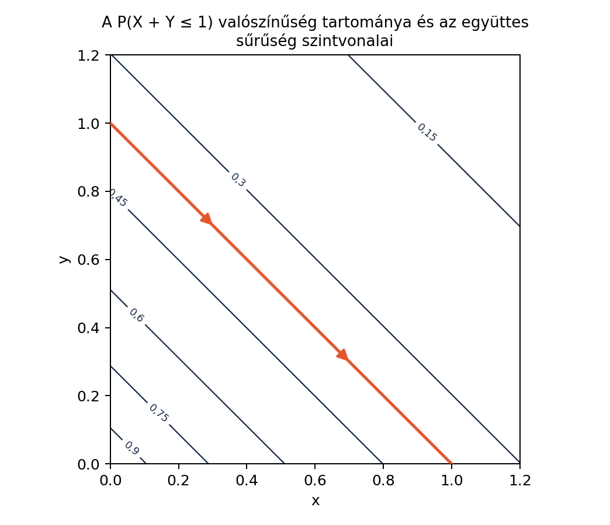

25.4 A kettős integrál
alkalmazásai: tömeg, súlypont, tehetetlenségi nyomaték,
valószínűség
Motiváció: egy vékony lemez tömege, súlypontja vagy éppen annak
valószínűsége, hogy két alkatrész élettartamának összege egy adott érték
alatt marad, elsőre két nagyon különböző kérdésnek tűnik. A hátterükben
mégis ugyanaz a matematikai gép áll: egy kétváltozós függvényt – egy
felületi sűrűséget vagy egy együttes valószínűségi sűrűségfüggvényt –
egy tartomány fölött kell összegezni. Az egyváltozós integrál erre csak
akkor alkalmas, ha a mennyiség csak egy irányban változik; a kettős
integrál viszont természetesen kezeli a síkbeli, pontról pontra változó
eloszlásokat.
25.4.1 Szemléletes kép
Ha a lemezt gondolatban nagyon kis
területű darabokra vágjuk, akkor egy darabka tömege jó közelítéssel
,
ahol
a felületi sűrűség (kg/m²). Az összes darabka tömegének összegzése a
kettős integrál. Ugyanez a gondolat a valószínűségszámításban: a
együttes sűrűségfüggvény mellett annak a valószínűsége, hogy az
vektorváltozó egy
tartományba esik,
.
Az alábbi ábra a
valószínűség tartományát és az
sűrűség szintvonalait mutatja.

A P(X + Y ≤ 1) valószínűség tartománya és
az együttes sűrűség szintvonalai - Az f(x,y)=e^{-(x+y)} függvény
szintvonalai; a görbe a D: x+y≤1, x≥0, y≥0 tartomány határa. A sűrűség
az origótól távolodva csökken.
Ábra nélkül is érthető: a háromszög alakú
tartomány fölött kell a sűrűségfüggvényt integrálni.
25.4.2 Alapfogalmak és
definíciók
Definíció. (Felületi sűrűség és tömeg.) Legyen
korlátos, integrálható tartomány, és legyen
folytonos felületi sűrűség (angolul: surface density). A lemez
tömege
Ha
mértékegysége
,
akkor
mértékegysége
.
Definíció. (Elsőrendű nyomaték és súlypont.) A
lemez elsőrendű (statikai) nyomatékai:
A súlypont (angolul: center of mass) koordinátái:
Itt
az
-tengelyre
vonatkozó nyomaték, ezért a kart az
koordináta adja;
-nál
a kar
.
A nyomatékok mértékegysége
,
a súlyponté
.
Definíció. (Tehetetlenségi nyomaték.) A lemez
másodrendű nyomatékai, más néven tehetetlenségi nyomatékai (angolul:
moment of inertia):
továbbá a síkra merőleges, az origón átmenő tengelyre vonatkozó
poláris nyomaték:
Ezek mértékegysége
.
A fenti integrálok akkor számolhatók a megszokott iterált alakban, ha
normáltartomány vagy alkalmasan felbontható ilyenekre; ezt a Kettős integrál normáltartományon alfejezetben
tanultuk.
Rajzold le a
tartományt, és döntsd el, hogy
-
vagy
-tartományként
egyszerűbb-e felírni.
Írd fel az integrálási határokat: külső integrál
konstans határokkal, belső integrál határai a külső változó
függvényei.
Számítsd ki az
,
,
integrálokat külön-külön.
Határozd meg a súlypontot:
,
.
Ellenőrizz: a súlypont a tartományban van,
szimmetria esetén a szimmetriatengelyre esik, állandó sűrűségnél
visszaadja a geometriai középpontot. Az
,
értékek pozitívak és nagyságrendjük
,
ahol
a lemez jellemző hossza.
25.4.4 Kidolgozott példa: téglalap
állandó sűrűséggel
Példa. Legyen
,
és legyen a sűrűség állandó:
.
Számítsuk ki a tömeget, a súlypontot és az
,
nyomatékokat.
Megoldás. A tömeg:
Ez szemléletesen a terület és az állandó sűrűség szorzata. A statikai
nyomatékok:
A súlypont:
tehát a téglalap középpontja, ahogy vártuk. A tehetetlenségi
nyomatékok:
Ellenőrzés. A mértékegységek stimmelnek:
kg,
kg·m². Ha például
m,
m és
kg/m², akkor
kg,
kg·m²,
kg·m².
25.4.5 Kidolgozott példa:
háromszöglemez nem állandó sűrűséggel
Példa. Legyen
az
,
,
háromszög, és legyen a sűrűség
.
Számítsuk ki a tömeget és a súlypontot.
Megoldás. A tartományt
-tartományként
írjuk fel:
A tömeg:
A belső integrál:
Így
Tehát
kg, ha a sűrűség kg/m² egységben adott. Az
nyomaték:
A belső integrál:
Így
Szimmetria okokból
,
mert a tartomány és a sűrűség is szimmetrikus az
cserére. Ezért
Ellenőrzés. Állandó sűrűség esetén a háromszög
súlypontja
volna. A
sűrűség az
növekedésével nő, vagyis a lemez a határvonal felé nehezebb, ezért a
súlypont kifelé tolódik:
.
Ez pontosan így is van.
25.4.6 A Steiner-tétel
A tehetetlenségi nyomatékoknál gyakran hasznos átszámítani egyik
tengelyről a másikra. A Steiner-tétel (más néven párhuzamos tengelyek
tétele) ezt a feladatot oldja meg.
Tétel (Steiner-tétel). Legyen
a lemez
-tengelyre
vonatkozó tehetetlenségi nyomatéka,
pedig a súlyponton átmenő, az
-tengellyel
párhuzamos tengelyre vonatkozó tehetetlenségi nyomaték. Ha a súlypont
távolsága az
-tengelytől
,
akkor
Hasonló igaz az
-tengellyel
párhuzamos tengelyre is.
Bizonyítási terv. Az
koordinátát felbontjuk
alakban. A négyzetre emelés után megjelenő kereszttag a súlypont
definíciója miatt nulla, a konstans tag pedig
-et
ad.
Bizonyítás. A koordináta-rendszert vegyük úgy, hogy
a súlypont
-koordinátája
,
így
,
tehát
.
Írjuk be az
definíciójába a felbontást:
Az első tag éppen
,
a harmadik tag pedig
.
A középső tagban
mert a súlypont definíciója szerint
.
Tehát
∎
Példa a Steiner-tételre. A fenti
,
kg/m² téglalapnál a súlypont
.
A súlyponton átmenő
-tengellyel
párhuzamos tengelyre vonatkozó nyomatékot jelölje
.
Ezt közvetlenül is kiszámolhatjuk:
Definíció. (Együttes sűrűségfüggvény.) Az
folytonos valószínűségi vektorváltozó együttes sűrűségfüggvénye
(angolul: joint density function) egy
függvény, ha
minden
pontban,
,
minden integrálható
tartományra
A integrálokban
fölött improprius kettős integrál is állhat, ha a tartomány
végtelen.
Definíció. (Peremeloszlás és függetlenség.) Az
perem-sűrűségfüggvénye:
az
perem-sűrűségfüggvénye:
Az
és
változók akkor függetlenek, ha az együttes sűrűség a peremek
szorzataként áll elő:
majdnem minden
pontra. A várható értékek:
Ez pontosan a fenti súlypontszámítás analógja, csak a
sűrűségfüggvény helyett az
valószínűségi sűrűségfüggvény szerepel, és a tömeg
-re
van normálva.
Példa. (Két exponenciális élettartam.) Tegyük fel,
hogy
és
független, 1/év paraméterű exponenciális eloszlású élettartamok, azaz
közös sűrűségfüggvényük
Ellenőrizzük, hogy valóban sűrűségfüggvényről van szó:
A peremek:
tehát
és
valóban függetlenek, és mindkettő 1 paraméterű exponenciális eloszlású.
A várható élettartam
év.
Számítsuk ki a
valószínűséget. A
tartomány:
Így
Értelmezés. Annak valószínűsége, hogy két ilyen
alkatrész élettartamának összege legfeljebb 1 év, körülbelül 26,4%. Ez
összhangban van azzal, hogy egy-egy alkatrész várható élettartama 1 év,
így a két alkatrész összegének várható értéke 2 év; az 1 éves határ az
összeg várható értékének fele, ezért az esemény viszonylag ritka.
25.4.8 Valós életbeli alkalmazás:
változó sűrűségű mérlegelő lap súlypontja
Tegyük fel, hogy egy téglalap alakú,
m széles és
m magas kompozit mérlegelő lap felületi sűrűsége a bal szélétől jobbra
lineárisan nő, mert az egyik oldalára folyamatosan erősítő réteget
visznek fel. A sűrűségmodell legyen
ahol
a bal széltől mért távolság méterben,
és
.
A
tartomány tehát
.
A tömeg:
A belső integrál:
Ezután
Ellenőrzés. A lap területe
m², az átlagos sűrűség a lineáris modell miatt
kg/m², így a tömeg
kg. A pontos érték stimmel.
A súlypont
-koordinátájához:
A súlypont
-koordinátájához:
Így
A súlypont tehát a lap bal szélétől 33,1 cm-re, az alsó éltől 20,0
cm-re van. Állandó sűrűség esetén a súlypont a geometriai középpont
lenne, azaz
m. A jobb oldal felé növekvő sűrűség a súlypontot jobbra tolja, ami
pontosan a kapott
m-ben jelenik meg.
Az alábbi ábrán a lap szürkesége a sűrűséget mutatja (balról jobbra
-tól
kg/m²-ig); a súlypont a geometriai középponttól kb.
cm-rel jobbra, a sűrűbb oldal felé tolódik, függőlegesen viszont nem
mozdul, mert a sűrűség
-tól
nem függ.
Statikus változat (mint a PDF-ben)
A változó sűrűségű lap súlypontja a sűrűbb oldal felé
tolódik
A tehetetlenségi nyomatékot is kiszámolhatjuk például az
-tengelyre:
A modell korlátja: a sűrűséget folytonos lineáris függvénnyel
közelítettük. Egy valódi kompozit lapnál az erősítőréteg vastagsága
lépcsősen változhat, ezért a folytonos modell simítást jelent; mérési
pontokból numerikusan kellene a
függvényt meghatározni.
25.4.9 Python-illusztráció: Monte
Carlo-integrálás
A fenti
valószínűséget numerikusan is becsülhetjük Monte Carlo-módszerrel. Ez a
következő gondolatra épül: ha
egyenletes eloszlású pontok a
egységnégyzeten, akkor a
átlag várható értéke éppen a keresett integrál, mert a négyzet
területe 1. A kód szemléltetés, nem bizonyítás; a hibát a véletlen
mintavétel és a lebegőpontos kerekítés okozza.
import numpy as nprng = np.random.default_rng(0)N =100_000# Egyenletes pontok a [0, 1] x [0, 1] négyzetenx = rng.random(N)y = rng.random(N)# Csak az x + y <= 1 háromszögben számolunk, kívül nullainside = x + y <=1values = np.where(inside, np.exp(-(x + y)), 0.0)# Az egységnégyzet területe 1, ezért az átlag maga az integrál becsléseestimate = np.mean(values)exact =1-2/ np.eprint(f"Monte Carlo becslés: {estimate:.6f}")print(f"Pontos érték: {exact:.6f}")print(f"A becslés a pontos érték közelében mozog; a hiba nagyságrendje 1/sqrt(N).")
Monte Carlo becslés: 0.264684
Pontos érték: 0.264241
A becslés a pontos érték közelében mozog; a hiba nagyságrendje 1/sqrt(N).
A kimenet rögzített maggal (default_rng(0)) futtatott
eredmény (Python 3, NumPy 2.3.5); a 4–6. tizedes a NumPy-verziótól
függhet. Itt a np.exp a természetes exponenciális függvény,
az np.e az Euler-szám. A Monte Carlo-becslés torzítatlan,
de varianciája van:
esetén a tipikus abszolút hiba nagyjából
alatt van; más maggal a becslés kb.
-gyel
ingadozik.
A nyomatékban rossz kart használunk. Az
kiszámításakor
-nal
kell szorozni, mert az
-tengelytől
mért távolság
.
Ha valaki
-be
-et
ír, akkor a súlypont koordinátái felcserélődnek.
A súlypontot területtel osztjuk, pedig tömeggel kell
osztani. Csak állandó sűrűségnél esik egybe a kettő; ha
függ a helytől, a nevező
,
nem pedig
területe.
A valószínűségi tartomány határait rosszul írjuk
fel. A
számításánál a belső integrál felső határa
,
nem 1. Ha mindkét integrált 0-tól 1-ig vesszük, a
négyzet fölött integrálunk, és hibás, túl nagy valószínűséget
kapunk.
Steiner-tételnél a
távolságot az origótól mérjük. A
a súlypont és a forgástengely távolsága. Ha a súlypont nem az origóban
van, az
tag téves lesz.
Monte Carlo-módszernél elfelejtjük a tartomány területét
figyelembe venni. Ha nem az egységnégyzeten mintavételezünk,
hanem egy
területű téglalapon, akkor a becsléshez az átlagot
-val
kell szorozni. Itt
területe 1, ezért nincs szorzó.
25.4.11 Önellenőrzés
Igaz-e, hogy a súlypont
-koordinátája
?
Indokold röviden.
Mennyi egy állandó sűrűségű téglalap
nyomatéka, ha a téglalap
és sűrűsége
?
Igaz-e, hogy ha
és
függetlenek, akkor az együttes sűrűségfüggvény a peremek szorzata?
Írd fel a
valószínűséget kettős integrállal, ha
és az együttes sűrűség
.
Mit mond ki a Steiner-tétel az
-tengelyre
vonatkozó nyomatékra?
Gyors számolás:
,
.
Mennyi a tömeg, a súlypont és az
?
25.4.12 Megoldások
25.4.12.1 Önellenőrzés –
válaszok
Hamis.
,
mert az
-tengelyre
vonatkozó nyomatékban az
a kar;
.
.
Igaz; a függetlenség ekvivalens azzal, hogy az együttes sűrűség a
két perem-sűrűség szorzata.
.
,
ahol
a súlypont távolsága az
-tengelytől,
pedig a súlyponton átmenő párhuzamos tengelyre vonatkozó nyomaték.
kg,
m,
kg·m².
25.4.13 Feladatok
1. feladat (A). Legyen
és
kg/m². Számítsd ki a tömegét, súlypontját,
és
nyomatékait.
2. feladat (A). Legyen
és
.
Határozd meg a lemez tömegét.
3. feladat (B). Határozd meg az
,
félkör alakú, állandó
sűrűségű lemez súlypontját. Használj polárkoordinátákat a Polárkoordináták és a Gauss-integrál alfejezet
alapján.
4. feladat (B). Legyen
és
.
Számítsd ki a tömeget és a súlypontot.
5. feladat (C). Bizonyítsd be a Steiner-tételt az
-tengellyel
párhuzamos tengelyre: ha
a lemez
-tengelyre
vonatkozó tehetetlenségi nyomatéka,
a súlyponton átmenő
-tengellyel
párhuzamos tengelyre vonatkozó nyomaték, és a súlypont távolsága az
-tengelytől
,
akkor
.
6. feladat (D). Egy berendezésben egy alkatrész
működik, és meghibásodásakor azonnal egy azonos tartalék alkatrész veszi
át a szerepét (hidegtartalék). A két élettartam (évben) egymástól
független,
paraméterű exponenciális eloszlású; a rendszer teljes élettartama
.
Az együttes sűrűségfüggvény
,
,
.
Ellenőrizd, hogy ez valóban sűrűségfüggvény, és számítsd ki a
valószínűséget. Értelmezd az eredményt.
25.4.13.1 A feladatok
megoldásai
1. feladat megoldása.
,
,
.
A súlypont a középpont:
m,
m. A tehetetlenségi nyomatékok:
2. feladat megoldása.
Tehát
kg, ha a sűrűség kg/m² egységben adott.
3. feladat megoldása. Polárkoordinátákban a
félkör:
A tömeg:
A szimmetria miatt
.
A
nyomaték:
Így
4. feladat megoldása. A tömeg:
Az
nyomaték:
Szimmetria miatt
,
így
.
5. feladat megoldása. Ugyanaz a gondolat, mint az
-tengelyes
Steiner-tételnél. Legyen a súlypont
-koordinátája
,
így
.
Az
nyomatékot felbontjuk:
Kifejtve:
Az első tag
,
a harmadik
.
A középső tag:
mert
.
Ezért
6. feladat megoldása. A normáltság:
A keresett valószínűség:
Tehát körülbelül 26,4% annak a valószínűsége, hogy a tartalékkal
együtt is legfeljebb fél évig működik a berendezés. Ez azért ilyen
alacsony, mert
miatt egy-egy alkatrész várható élettartama csak 0,5 év, és annak
valószínűsége, hogy az összeg legfeljebb 0,5 év, mérsékelt.
25.4.14 Rövid összefoglaló
Ha a síklemez felületi sűrűsége
,
akkor tömege
.
A súlypont koordinátái
és
,
ahol
és
az elsőrendű nyomatékok. A tehetetlenségi nyomatékok
,
,
és
.
A Steiner-tétel szerint
,
ahol
a súlypont távolsága az
-tengelytől,
pedig a súlyponton átmenő párhuzamos tengelyre vonatkozó nyomaték.
Kétváltozós valószínűségi sűrűségfüggvény esetén
,
ahol
.
A peremek
és
;
függetlenségnél
.
A
típusú valószínűség háromszög tartomány fölötti integrál. A Monte
Carlo-integrálás a fenti integrálok statisztikai becslésére alkalmas.
Továbbvitt eredmények: a tömeg-, súlypont- és
nyomatékszámítás hármas integrálos alakját a(z) Alkalmazások: térfogat, tömeg, gravitáció és
elektrosztatikus tér alfejezet használja; a Monte Carlo-módszer a(z)
4. projekt: optimalizálás és gépi tanulás –
gradiens, Hesse-mátrix, Lagrange projektben tér vissza.
25.4.15 Források és ellenőrzési
hiányok
A fejezet klasszikus eredményeit a többváltozós analízis standard
tankönyvei (például Thomas, Marsden–Tromba) tárgyalják. Ebben a
szövegben nem adok meg oldalszámot vagy kiadást, mert nem ellenőriztem
azokat; a fenti levezetések a definíciókból közvetlenül következnek.